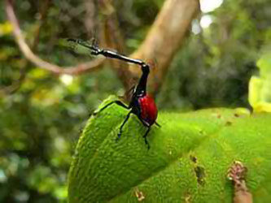

Scarabée Girafe


Le Trachelophorus giraffa ou Scarabée Girafe est un coléoptère de la famille des Attelabidae se trouvant à Madagascar.
Les plus remarquables caractéristiques de cette espèce sont ses élytres rouge vif, son corps noir brillant, son long cou, pourvue d’une unique charnière, d’où son nom Scarabée Girafe. Sa taille générale est estimée dans les 20mm pour les mâles et environ 40mm pour les femelles.
D’après les recherches scientifiques, cette espèce est herbivore mais contre toute attente, il parait que le Scarabée Girafe ne possède aucun prédateur…